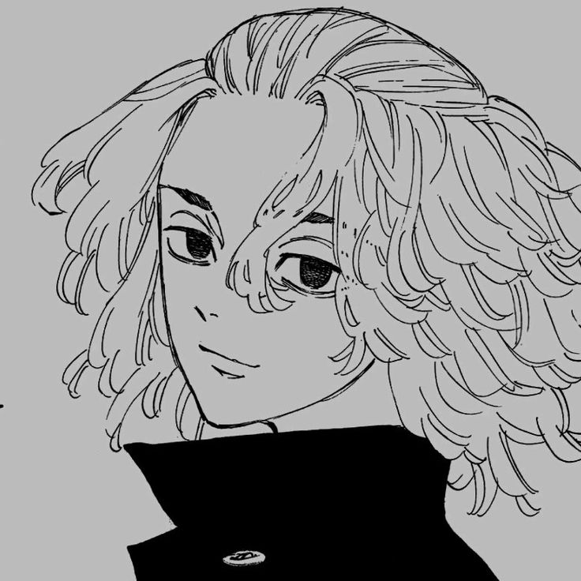

Historia
A historia é apontada para Takemichi é um virgem desempregado de 26 anos que descobre que a garota que ele namorou durante o ensino médio, a única que ele já namorou, apos ver uma norticia Ele descobriu que Hinata Tachibana(a mesma que ele ja amou) foi morta pela impiedosa Gangue Manji de Tóquio.
No dia seguinte ele está na beira da plataforma do trem e é empurrado pela multidão. Ele fecha os olhos se preparando para morrer, mas ao abrir, ele voltou no tempo, quando tinha 12 anos de idade.
Agora que ele está na melhor época de sua vida, Takemichi decide se vingar de sua vida, salvando sua namorada e parando de fugir de si mesmo.
É serializado na revista Weekly Shōnen da editora Kodansha desde março de 2017.
Gênero: Ação, Ficção científica; Origem: Japão; Criação: Ken Wakui;
Personagem
Sano Manjiro é um jovem que aparece nos primeiros episódios de Tokyo Revengers como um adolescente temido por outras gangues e conhecido por sua grande força e ótimo desempenho em lutas contra rivais. Em diversos momentos vemos que ele é capaz de derrubar sozinho seus inimigos com a força de um único chute. Apesar desse lado ameaçador, Mikey é um garoto gentil, companheiro, engraçado e solidário com seus companheiros de gangue, principalmente Draken, seu melhor amigo e braço direito. Ele passa boa parte do anime sendo um garoto normal de sua idade, mas em situações extremas, Mikey se torna alguém violento ao ponto de matar outras pessoas com as próprias mãos se for preciso. Acontece que, desde muito jovem, o garotinho passou por inúmeras perdas e começou a ser tomado por uma maldade que ele chama de “escuridão”. São esses trumas e essa escuridão que fazem do Mikey “do futuro” o líder impiedoso de uma gangue poderosa que se envolve com coisas pesadas (drogas, assassinato, jogos, estupros e etc).
×
Draken é um adolescente musculoso que é excepcionalmente alto para sua idade. Sua cabeça é raspada nas laterais e nas costas para expor sua tatuagem de dragão na têmpora esquerda. Seu cabelo loiro é longo no topo de sua cabeça e mantido em uma trança elegante. Ele deixa alguns fios de cabelo soltos na frente.
×Quando adulto, Takemichi é um homem de estatura média com cabelos pretos despenteados e ondulados e olhos azuis. Ele usa roupas simples e comuns. Ele geralmente tem uma expressão cansada devido ao estresse da vida.
×Draken é um adolescente musculoso que é excepcionalmente alto para sua idade. Sua cabeça é raspada nas laterais e nas costas para expor sua tatuagem de dragão na têmpora esquerda. Seu cabelo loiro é longo no topo de sua cabeça e mantido em uma trança elegante. Ele deixa alguns fios de cabelo soltos na frente.
×Wakasa é um homem de estatura média em seus 20 e poucos anos com traços levemente femininos. Ele usa uma versão ornamentada personalizada do uniforme Brahman com flores e borboletas bordadas nas mangas. Debaixo do moletom grande, ele usa uma grande camisa branca de gola alta e um par de sandálias para calçados. Seu cabelo é formado em um padrão listrado tingido nas cores roxo e loiro e muitas vezes é amarrado em um rabo de cavalo com um fio solto de cada cor em cascata nas laterais do rosto. Ele tem olhos lilás caídos e um palito de pirulito entre os lábios voltados para baixo, os quais contribuem para sua aparência típica exausta e descontraída. Seus cílios também são particularmente longos e ele usa um brinco vermelho no lóbulo da orelha esquerda.
×Curiosidades

seu nome Mikey é por causa de sua irmã que tinha um nome ocidental, e por isso ela sofria com muito preconceito
por isso seu apelido é Mike para homenagear sua irmã.
2
Recebendo uma certa atenção com suas outras obras, foi com Tokyo Revengers, que Ken Wakui, alcançou o estrelato, entre os criadores de mangás. Com 27 volumes já publicados no Japão e licenciado no Brasil, pela Editora JBC, o mangá já vendeu mais de 50 milhões de cópias em todo o mundo, além de ter ganho o 44º Kodansha Manga Award, na categoria shonen de 2020.
Assim como Tokyo Revengers, fala sobre as gangues japonesas, seu criador, Ken Wakui já vivenciou, a trama do seu mangá. O mangaká integrou uma gangue japonesa nos anos 2000 e isso serviu como inspiração para que ele concebesse toda a história do seu mangá de maior sucesso até então. Isso justifica, o motivo, de tantas descrições e histórias coesas, que são contadas ao longo do mangá.
Cadastro
Mande sua sujestão para mais anime e mangar!!
Aqui no Clube Manji.